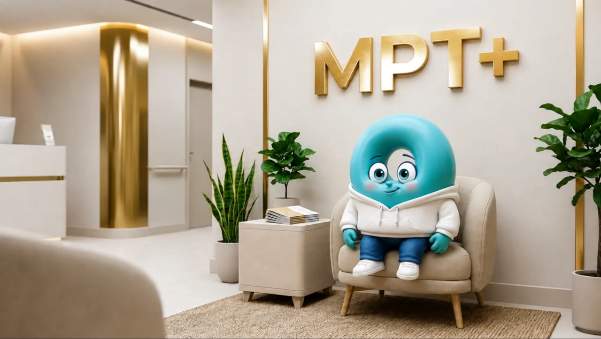

Мережа діагностичних центрів «МРТ ПЛЮС»
Впевненість починається з ясності
Якість діагностики
Томографи Siemens експертного класу. Що детальніший знімок, то менше місця для здогадок: видно навіть дрібні зміни, з яких хвороба тільки починається.
Повнота опису
Не просто підтверджуємо підозру лікаря – описуємо все, що видно на знімку. Знахідка, якої ніхто не шукав, іноді важливіша за причину звернення.
Досвід команди
Наші рентгенологи описують понад 60 000 досліджень за рік. Складні знімки дивляться колегіально: висновок не залежить від однієї думки.
Де нас шукати
Луцьк
просп. Молоді, 12В
- Пн–Пт
- 8:00–22:00
- Сб
- 8:00–18:00
- Нд
- вихідний
Рівне
вул. Карнаухова, 2А
- Пн–Пт
- 8:00–21:00
- Сб
- 9:00–17:00
- Нд
- вихідний
Ковель
вул. Олени Пчілки, 4 · Ковельське МТМО
- Пн–Пт
- 8:00–20:00
- Сб
- 9:00–15:00
- Нд
- вихідний
Житомир
вул. Вокзальна, 12
- Пн–Пт
- 8:00–21:00
- Сб
- 9:00–17:00
- Нд
- вихідний
Київ
вул. Композитора Мейтуса, 5 · TOP Clinic DENIS
- Пн–Сб
- 8:00–20:00
- Нд
- вихідний
Шептицький
вул. Івасюка, 2
- Пн–Пт
- 8:00–19:00
- Сб
- 9:00–14:00
- Нд
- вихідний
Наші послуги
Що ми досліджуємо
Магнітно-резонансна томографія
Головний і спинний мозок, суглоби, хрящі, зв'язки, м'язи, органи малого таза, печінка і жовчні протоки, судини. Запалення, пухлини, грижі диска, розриви зв'язок і хрящів, демієлінізуючі процеси.
Компʼютерна томографія
Мультиспіральна КТ. Переломи і травми, легені та середостіння, приносові пазухи, камені в нирках. Крововиливи і гематоми, тромби й тромбоемболія, аневризми та розшарування аорти.
Що вас очікує
Найважливіше за дві хвилини

Як проходить обстеження · 1 хв 40 сГолоси пацієнтів
Що кажуть після обстеження
Демонстраційний відгук: тут стане справжній текст пацієнта після збору відгуків.
Демонстраційний відгук: тут стане справжній текст пацієнта після збору відгуків.
Демонстраційний відгук: тут стане справжній текст пацієнта після збору відгуків.
Питання і відповіді
Найчастіше запитують
Які дослідження проводить МРТ ПЛЮС?
МРТ на томографах 1,5 і 3 Тесла, комп'ютерна томографія, дослідження з контрастним підсиленням, МР- і КТ-ангіографія. Перелік у кожному центрі свій – залежить від апаратів.
Де розташовані центри мережі?
Луцьк, просп. Молоді, 12В · Рівне, вул. Карнаухова, 2А · Ковель, вул. Олени Пчілки, 4 · Житомир, вул. Вокзальна, 12 · Київ, вул. Композитора Мейтуса, 5 · Шептицький, вул. Івасюка, 2.
Як записатися на дослідження?
Телефоном 0 800 311 058 – безкоштовно по Україні. Оператор підбере центр і час, порахує вартість і скаже, чи потрібна підготовка саме для вашого дослідження.
Чи потрібне направлення лікаря?
Направлення бажане: у ньому вказана ділянка обстеження і діагноз, з якими опис буде точнішим. Якщо направлення немає – зателефонуйте, оператор підкаже, як діяти.
Коли буде готовий опис?
Знімки ви отримуєте одразу після дослідження, опис лікаря-рентгенолога – згодом; термінові випадки описуються в день дослідження.
Записатися
0 800 311 058Безкоштовно по Україні. Підберемо центр і час, порахуємо вартість, підкажемо підготовку.